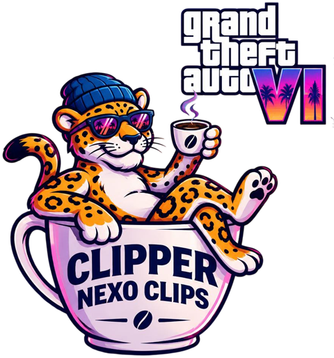

NEXO Clips
NEXO Clips

Os melhores momentos das lives, todo dia
Cortes de humor, fugas e momentos inesperados de GTA RP e games, com crédito ao criador.
O que é o NEXO Clips
O NEXO Clips é um canal de cortes e também o nome do painel que usamos para produzi-los. O painel roda no computador do próprio criador do canal: ele recorta as lives, gera as legendas e publica os vídeos nas contas oficiais do NEXO Clips no YouTube, no Instagram e no TikTok, usando somente as APIs oficiais de cada plataforma e com autorização da própria conta.
O painel não é vendido nem oferecido a terceiros: ele publica apenas nas contas do NEXO Clips.
About (English)
NEXO Clips is a clips channel (best moments from GTA RP and gaming livestreams) and the name of the desktop dashboard we use to produce them. The dashboard runs locally on the channel owner's computer: it cuts the streams, adds captions and publishes the videos to the official NEXO Clips accounts on YouTube, Instagram and TikTok through each platform's official API, with the account owner's authorization. It is not offered to third parties.